SEDRAS: Symbolically Evaluated Deep Research And Science
2026
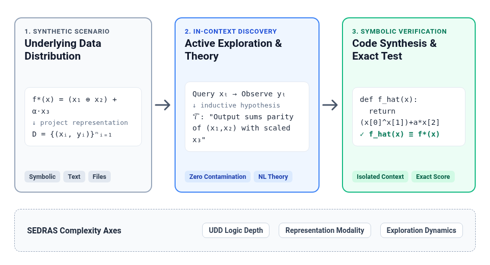
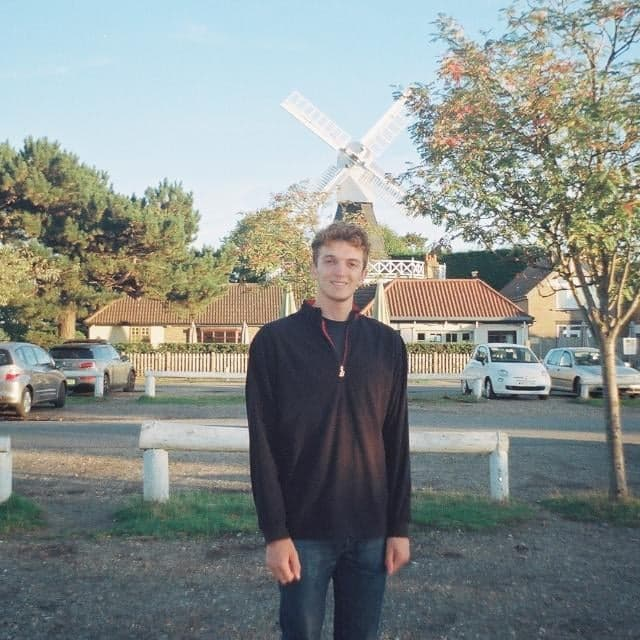
I am a Staff Research Scientist at Google DeepMind. My recent research focus is on generative world models that can be used for reasoning and planning across long horizons, such as Genie 3 and Genie 4.
Before that, I was a postdoc at Meta AI (FAIR) working on perception for robotics. I graduated from my PhD at Imperial College London in 2023, advised by Prof. Andrew Davison. There my work focused on 1) graphical representations and distributed inference algorithms, and 2) training neural scene representations via continual learning. I completed my undergraduate and Masters in Physics at the University of Oxford.

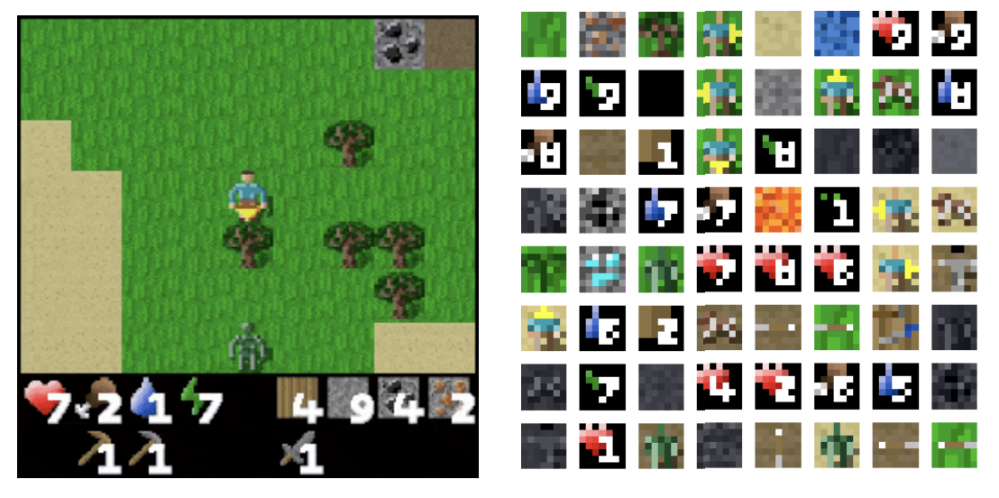
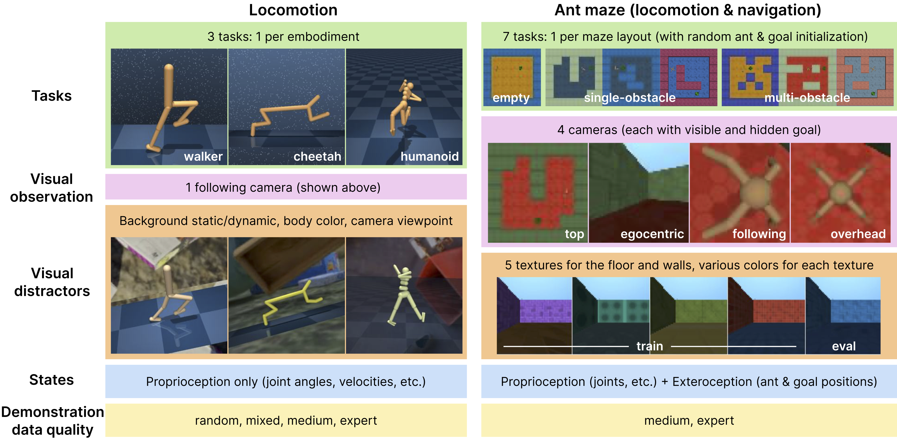
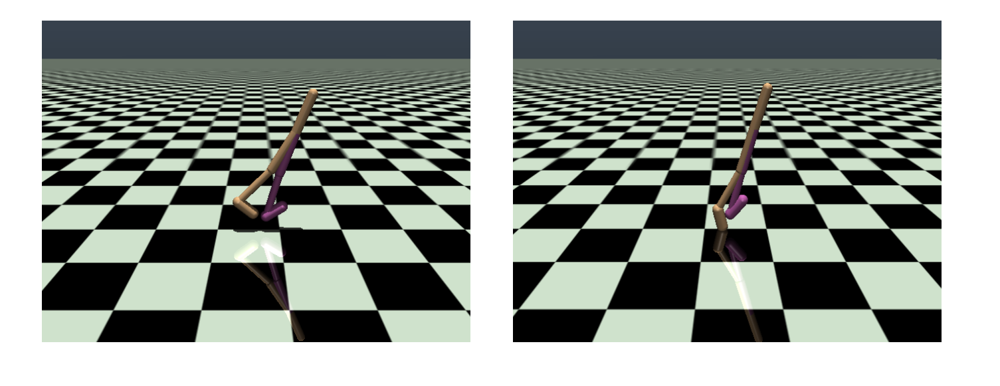
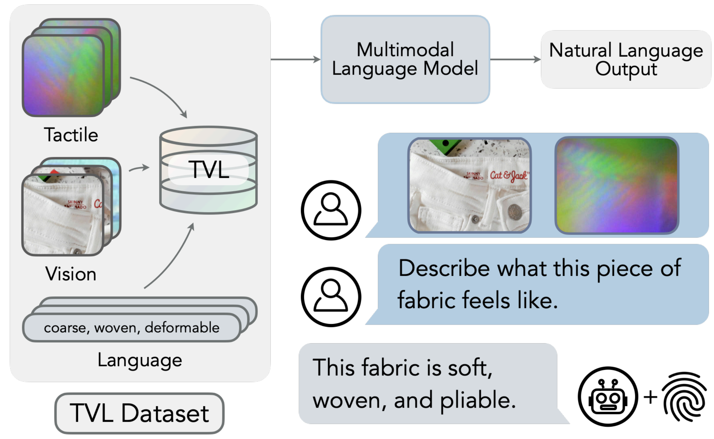
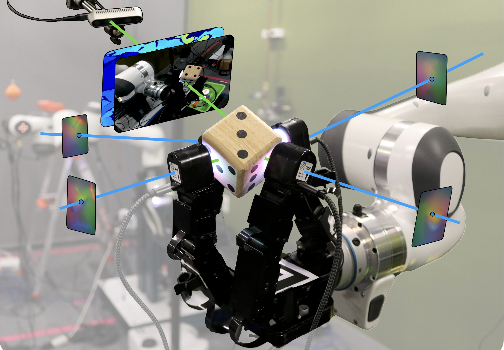
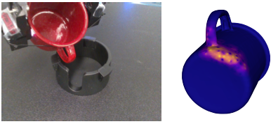

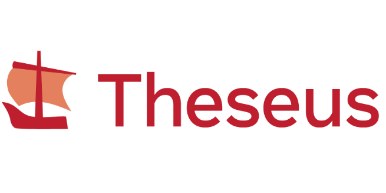
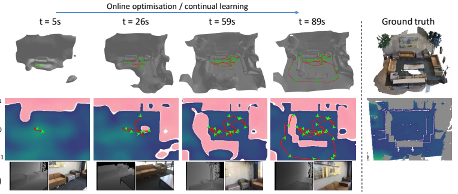
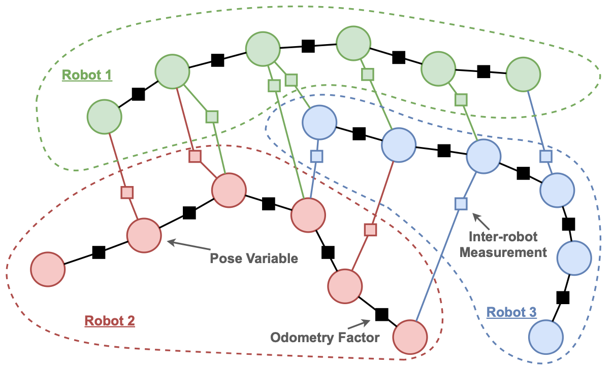
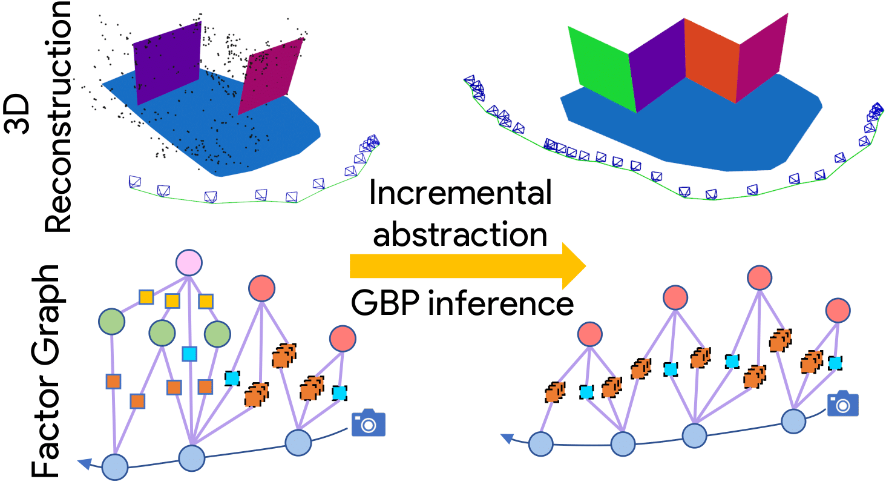
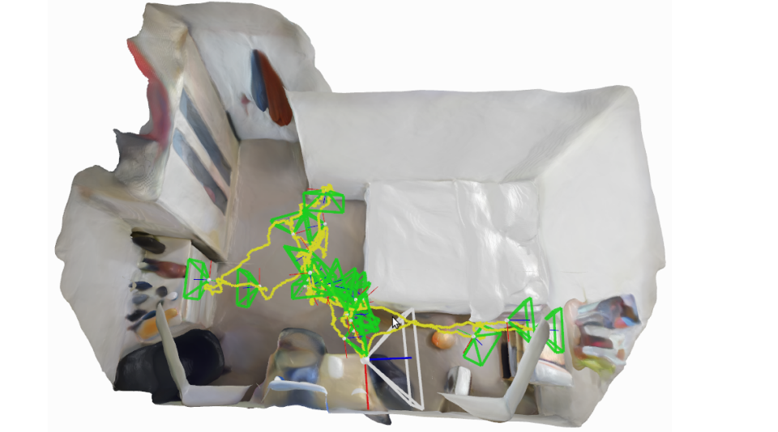
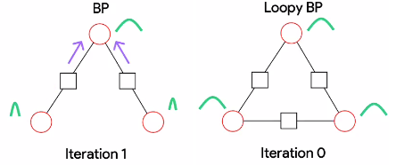
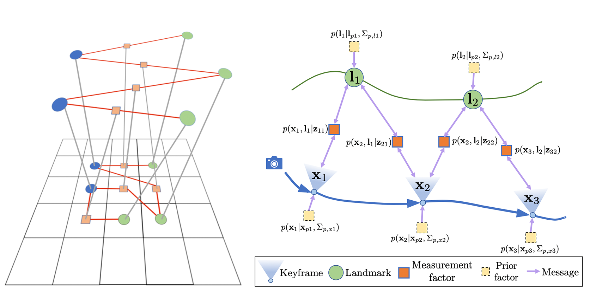
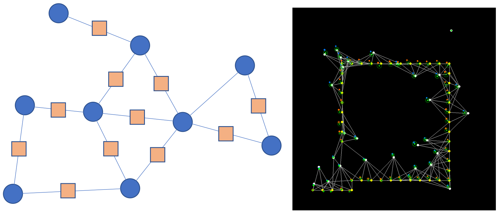